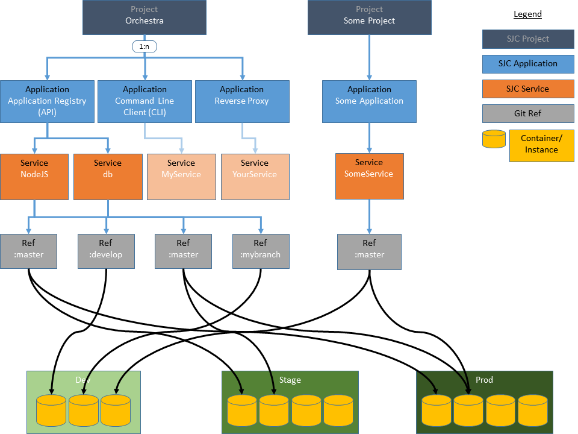

Orchestra
Orchestra is a set of tools that work together make deploying and scaling web apps easy, fast, and cheap.
Most modern web applications comprise multiple core technologies including web servers, application servers, database servers, APIs, and 3rd party services. Orchestra was created to deploy and scale apps made up of these components elegantly. It can deploy multiple web applications made up of multiple services, from multiple branches of multiple Git repositories, to multiple targets, making it an ideal tool for developers and DevOps.
The concept is akin to a symphony, composed of multiple sections, which are made up of multiple players, all culminating in multiple orgasms.
Concepts
The root level for Orchestra is the Project. A project can be thought of as group of one or more Applications. Applications are made up of services, with each service sharing a one-to-one relationship with a Docker container. A simple real-world example of this would be a self-hosted WordPress installation for a personal recipe site called MyRecipes. MyRecipes would be the project that contains an application called website. The website application contains two services, one called PHP and the other MySQL. Since services are 1:1 with Docker containers this means our project is composed of two Docker containers. Now, if we want to add a custom recipe uploader based on a cool NodeJS web-service, we add a new application to the project called recipe-api. This application contains a single service called NodeJS which again, has a one-to-one relationship with a Docker container.

Let’s go into greater detail on Projects, Applications, Refs, and Services...
Project
A project is a way to group and namespace related applications. As such, it is lightweight. As far as meta-data tracking and includes:
- name
- A short, legible, semantic, meaningful name
- slug
- a safe, machine-readble version of the name, composed of URL-safe characters (used in REST calls to the Application Registry API)
- description
- A description of the project, for humans
- tags
- An array of tags helpful in searching by the Application Registry API.
- homepage
- A landing page with a synopsis of the project and links to each application repo and optional documentation wiki (e.g. Orchestra.) plus the applications defined in the next section.
Application
This is the main focus of operations performed by SJC CLI and App Registry. The system will normally think in terms of Applications and Instances. An Application can be thought of as all the files in that repo plus all the information in the appdef.yml file that sits at it's root. An Application can contain 1 or more services (in the future, we may support zero-service applications). Each application shares a 1:1 relationship with a Git repository.
Ref
This system needs git. Like git, you have to be in a working directory to invoke commands on that app. Orchestra uses git's method of identifying a specific commit. Hence, it will usually deal with branches, but can work in "detached head" mode as well and refer unambiguously to commits by their sha1 ID. You can think of a ref as simply an Application in a definite, identifiable state.
Service
A Service is a Docker Container in addition to an agreed upon name (and some other metadata). For example, a Django service will contain a Dockerfile, the name "django", which allows other services to know how to link to it, and some information on how it should be run (like in a docker-compose.yml file). One of the Services is designated the "ambassador", which is how Orchestra knows which Service to assign an ephemeral port to, and to expose it's reverse proxy to. The "services" section of appdef.yml follows closely the docker-compose.yml format. This is by design. Indeed, appdef.yml can be seen as a superset of docker-compose.yml.
Target
A Target is a host, or a cluster of hosts acting as one. Targets contain information on how to "unpack" the docker app, and that information can vary from one Target to another (ex: A production endpoint will unpack an app and replace the MySQL service with RDS credentials. A staging server may do the same, but with different credentials. Another target may simply spin up the containers unmolested).
Instance
An Instance is what happens when a Ref is pushed to a Target. An Instance has a unique and predictable URL, in addition to a unique and unpredictable ephermal port. It's address can be composed as Project.slug + Application.slug + Ref + Target.endpoint. ( ie: cerebrum.cms.CE-99-add-footer.staging.sjc.io ). The ephemeral port is used internally, and is not needed to construct an instance’s address.

Components
Command Line Interface
The CLI is for invoking common commands. It's API and usage is inspired by CLIs like npm, git, docker, docker-compose, rsync, and ssh. Indeed most of it's actions invoke one or more of those utilities.
The command line interface is implemented in NodeJS 4.0 and communicates directly with the Docker daemon. All project definitions, dependencies, host information, docker files, etc are retrieved from a central registry.
Application Registry
This is a central service that acts as a global registry, keeping track of what applications in what state have been deployed to what endpoints. Every app declares it's features and properties with an appdef.yml file, that lives at it's repo's root.
Application Registry is implemented as a REST API server on NodeJS 4, ExpressJS 4, Swagger 2 and MongoDB 3.
Reverse Proxy
This is the only exposed container, exposing itself by default on port 80. It links out to as many apps as needed using standard docker linking. Those apps, in turn, may link out to dependant services (like databases), but the Reverse Proxy is only aware of the ambasador service (ie: the web server). When a new Application is deployed to a new Target, that target stops accepting connections on one instance of it's Reverse Proxy, drains any remaining connections, and spins up a new Reverse Proxy with the newly added Application linked in. This should all happen in a failure tolerant, zero-downtime way
dogs
The Orchestra repository contains two trivial tutorial projects as Github submodules, Colours and Dogs. The respositories can used to try out SJC-CLI by spinning up/down projects based on Git branches.
colours
see above
Getting Started
Some primary dependencies include:
- NodeJS 4.x
- jshon
- Docker Machine (if you are on OS X, Windows support comming soon!)
OSX and Linux
run this command to download the CLI to ~/.sjc/cli
$ curl https://raw.githubusercontent.com/stjosephcontent/sjc-cli/master/install.sh | bash
Now install the Reverse Proxy to ~/.sjc/cli:
$ curl https://raw.githubusercontent.com/stjosephcontent/orchestra-reverse-proxy/master/install.sh | bash
The proxy needs to run as a privileged user because it's going to open port 80 and write to /etc/hosts
$ bash ~/.sjc/reverseproxy/run.sh
Output from the proxy will stream to that console, so you'll need to open another one to start running commands. So don't worry if this command looks stuck. It's not. Leave that console as is, and open a new one to run some more commands.
This system expects your docker-machine to be called "dev". so either create a new machine with the virtualbox driver called "dev", or alter ~/.sjc/cli/src/config.json to point to your machine.
Try:
$ sjc ls
You should get an empty response, indication that CLI is working, but no apps are running. That's not very much fun, so let's go ahead and clone dogs:
$ git clone https://github.com/stjosephcontent/dogs
$ cd dogs
$ sjc start --hard
$ sjc ls
Ah very good! Our first SJC app. Let's create another:
$ git checkout poodle
$ sjc start --hard
$ sjc ls
Now we're cooking with gas! Open them up in your browser: sjc browse 1 or sjc browse 2.
How cool is that? You should also try using this REPO for more variants and more fun: https://github.com/stjosephcontent/colours
For more info, sjc help.
Note that this app is in alpha. You almost certainly will run up against bugs. But we intend to improve and support this as a long-term project, with the support of our company, St Joseph Communications. Also, we will totally dogfood Orchestra internally.
Windows
We beleive in supporting Windows. Windows support is comming soon.
Vote!
This project is part of Docker Global Hack Day #3. If you want (and we would love you for it) you can vote on it
Obligatory "We're Hiring" spot
If (and only if) you are smart and passionate, hit us up!